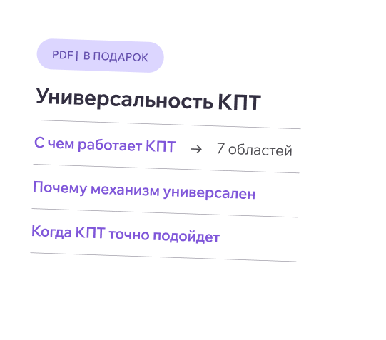

Место, где знания применяют на практике
С 2021 года готовим специалистов к работе с клиентами, а не только к изучению теории

Открытый вебинар для психологов о том, как CFT помогает понимать самокритику, отвержение поддержки и чувство вины за заботу о себе.
 Участие бесплатное, нужна только регистрация
Участие бесплатное, нужна только регистрация
Клиент как будто отказывается от того, что должно помогать: защищает свою самокритику, не принимает поддержку, стыдится заботы о себе. Привычные способы работы перестают действовать.

Клиент уверен, что самокритика помогает ему сохранять мотивацию, контролировать себя и двигаться вперед. Более поддерживающее отношение к себе кажется ему опасным.

Поддержка и забота со стороны терапевта вызывают не облегчение, а напряжение, недоверие, стыд или желание увеличить дистанцию.

Клиент с травматическим опытом или опытом утраты воспринимает сострадание к себе как слабость, эгоизм или предательство.
 Чтобы разобраться в этих ситуациях, не нужно
заранее знать CFT. Приходите на вебинар —
покажем метод в действии на разборе этих трех
клиентских случаев.
Чтобы разобраться в этих ситуациях, не нужно
заранее знать CFT. Приходите на вебинар —
покажем метод в действии на разборе этих трех
клиентских случаев.
Первая встреча с методом — через живые примеры. Сначала посмотрим, как CFT объясняет реакции клиента, а затем разберем три клиентских случая вместе с экспертом.
Теория
Почему клиент может держаться за самокритику, даже если она причиняет ему страдание
Почему поддержка и тепло иногда вызывают не облегчение, а тревогу и сопротивление
Что может стоять за убеждением «я не заслуживаю заботы»
Почему попытка просто «быть добрее к себе» не всегда работает
Какие процессы могут поддерживать эти реакции
Как терапевт может работать с ними на практике

Практика
Вы увидите, что происходит за привычными реакциями клиента и какие направления работы можно использовать в терапии.
Почему он продолжает делать то, что причиняет ему страдания, и держится за самокритику.
Составить первое представление о терапии, сфокусированной на сострадании, — без предварительной подготовки.
Понять, подходит ли CFT для вашей практики и стоит ли изучать его глубже.
Предварительное знакомство с CFT не требуется.
Замечаете в работе самокритику, стыд и отказ от поддержки — и хотите лучше понимать, что за ними стоит.
С самокритикой, стыдом, травматическим опытом, утратой и трудностями в принятии поддержки.
Студентам старших курсов, которые присматриваются к современным методам и выбирают, что изучать дальше.

Ведет в Академии курс «Введение в терапию, сфокусированную на сострадании (CFT)». На вебинаре познакомит с основными идеями метода и разберет три клиентских случая.
98% студентов
рекомендуют обучение
в Академии Современной Психологии
 4.45
4.45
 4.82
4.82
 4.9
4.9
* По данным отзывов на независимых площадках
С 2021 года готовим специалистов к работе с клиентами, а не только к изучению теории
Делаем первые шаги в профессии вместе: бесплатные вебинары, книжные клубы и поддержка начинающих

Продолжают развивать практику, обмениваются опытом и поддерживают друг друга
Практикующие специалисты разных направлений, которые ежедневно работают с клиентами и делятся знаниями и опытом

Один вечер — и у вас появится первое представление о том, как CFT объясняет самокритику и отказ от заботы о себе. Плюс рабочий лист, который останется с вами после вебинара.
Одно нажатие, без анкет и лишних полей
Ссылка на эфир придет в Telegram или MAX. Напомним за час до начала
Бонус для участников вебинара

18 сентября, 18:00 МСК
Выберите мессенджер: пришлем ссылку на эфир туда и напомним за час до начала.
Мессенджер не открылся? Подписаться на бота вручную
Запись эфира будет доступна зарегистрированным участникам.
Не нашли ответа на свой вопрос? Напишите нам
Участие бесплатное, нужна только регистрация. Ссылка на эфир придет в выбранный мессенджер, напомним за час до начала.
Да, вебинар задуман как первая встреча с методом. Предварительное знакомство с CFT не требуется: основные идеи разберем на живых примерах, без сложной терминологии.
Самокритика, отвержение поддержки и чувство вины за заботу о себе встречаются в работе специалистов любого направления. Вебинар покажет, как CFT смотрит на эти реакции, — этот взгляд может дополнить ваш подход, а не заменить его.
Да, вебинар рассчитан и на студентов старших курсов психологических программ. Специальная подготовка не нужна, термины объясняются по ходу.
Онлайн. Ссылка на эфир придет в выбранный мессенджер после регистрации. Достаточно перейти по ней в назначенное время.
Около 60 минут.
Да, запись будет доступна зарегистрированным участникам. Но живое участие дает больше: разбор клиентских случаев проходит в прямом эфире, и вопрос спикеру можно задать сразу.
Да. Участникам будет доступен рабочий лист «Взгляд CFT на трудности клиента» — он поможет смотреть на реакции клиента глазами метода.
Нет, за вебинар сертификат не выдается. Документы установленного образца можно получить только по итогам обучающих программ Академии.
Скажем честно: это вебинар про CFT, но в конце мы коротко расскажем о возможности обучиться методу в Академии. Это несколько минут, все остальное время займут знакомство с методом и разбор клиентских случаев.